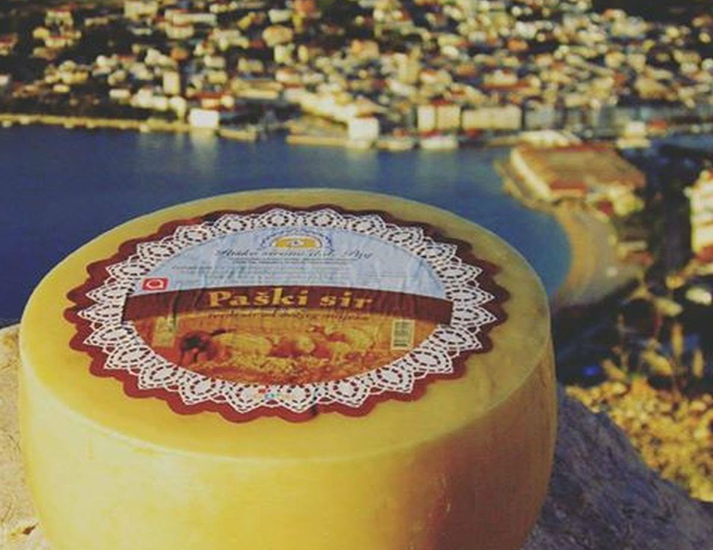
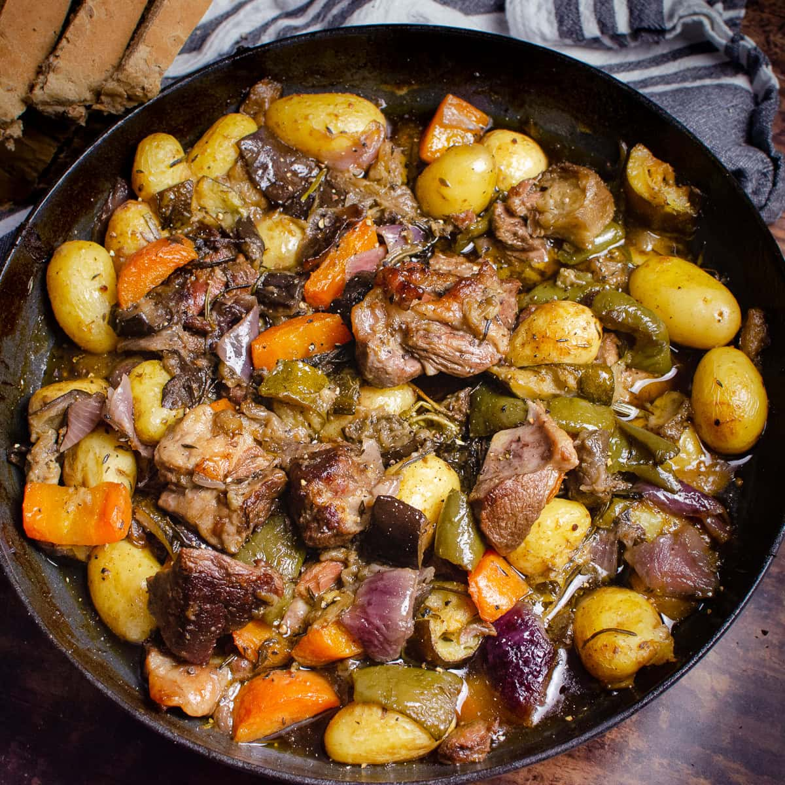
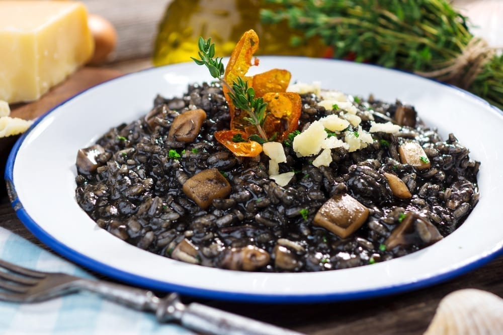

Food
Croatian cuisine is a unique mix of Mediterranean and Central European influences, shaped by regional traditions and fresh local ingredients. Along the coast, dishes are light and seafood-based, while inland regions are known for richer, hearty meals.
Some of the most authentic specialties include Paški sir, a famous sheep's milk cheese from the island of Pag, known for its strong and distinctive taste influenced by sea salt and wind. Traditional dishes like peka are slow-cooked under a metal bell, creating deep, rich flavors.
You'll also find classics such as crni rižot, a black risotto made with cuttlefish ink and sarma, cabbage rolls filled with minced meat and rice. Each dish reflects the history and culture of its region.



Whether you are dining by the Adriatic coast or in a traditional inland village, Croatian food offers an authentic experience rooted in simplicity, freshness, and tradition.